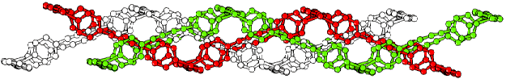

The diagram on the front cover is not a design for a new type of Christmas
decoration but a fascinating structure from Neil Champness, Nottingham
University. Here is another view from the side.

During studies into the preparation of interpenetrated adamantoid lattices
the remarkable complex
{[Cu2(MeCN)2(L)3](PF6 )
2}n, where L =1,4-bis-(4-pyridyl)butadiyne,
was isolated. Characterisation by single crystal X-ray diffraction studies
revealed a polycatenated undulating molecular ladder motif leading to the
formation of fully-interwoven two-dimensional sheets. This was the first
example of this structural type and it is formed due to the retention of an
acetonitrile solvent molecule by each Cu(I) centre. This allows both the
ladder structure to be formed, by blocking one of the Cu(I) coordination
sites, and leads to the undulating nature of these ladders. Polycatenation
is observed because the long bridging ligand results in a considerable space
being left between the "rungs" of any given ladder, allowing the
interpenetration of four other symmetry-related ladders. The diagrams on
this page show the undulating structure from another view point,
three shades distinguish the three ladders, and show the remarkable symmetry
more clearly.
This structure has been published in:
A.J. Blake, N.R.Champness, A. Khlobystov, D.A. Lemenovskii, W-S. Li and M. Schröder, Chem. Commun., (1997), 2027.
 Click here to return to BCA homepage
Click here to return to BCA homepage